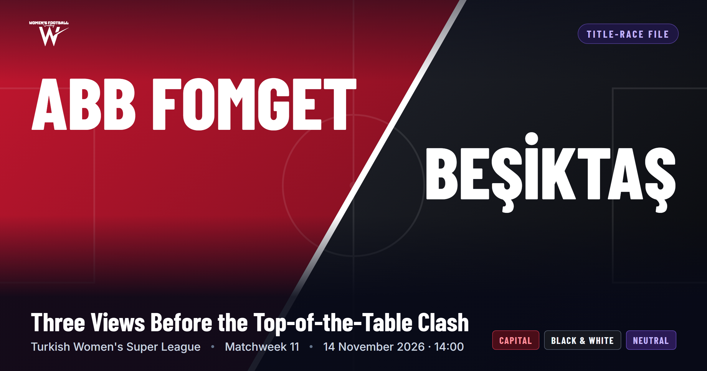
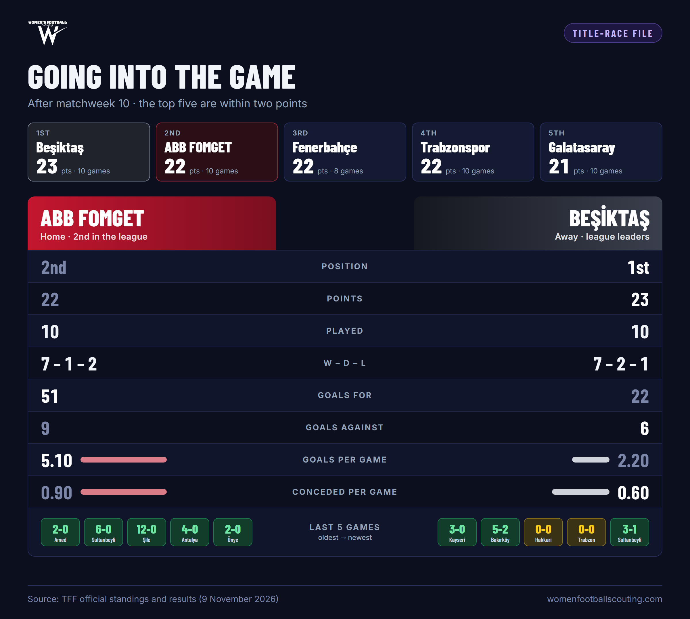

Three Views Before the Top-of-the-Table Clash: ABB FOMGET vs Beşiktaş
Leaders Beşiktaş visit ABB FOMGET, one point behind them, on Saturday. The league's highest scorers against one of its tightest defences: we asked for three views, from the home end, from a Beşiktaş supporter and from the WFS Analysis Desk.

The biggest game of matchweek 11 in the Turkish Women's Super League kicks off at 14:00 on Saturday in Ankara. Beşiktaş lead the table on 23 points; ABB FOMGET are right behind them on 22. The top five are separated by just two points: Fenerbahçe, with two games in hand, and unbeaten Trabzonspor are also on 22, Galatasaray on 21. FOMGET have scored 51 goals in ten games and won their last six; Beşiktaş have conceded only six in ten.
Ahead of the game we put the same themes to three different vantage points: a FOMGET supporter from the home end, a Beşiktaş supporter who will follow the match on a screen because there will be no away section, and the WFS Analysis Desk. The atmosphere, the maths of the title race, the tactical knot, the moments that could decide it and their score predictions are below. At the end, in the Data Desk, you'll find predicted line-ups, animated scenarios and each team's strengths and weaknesses, all built from the site's data.
About our pundits
Our two supporter pundits asked not to be named, so we introduce them by the lens through which they watch the game. The third view belongs to the WFS Analysis Desk.
View on Instagram: @abbfomget
View on Instagram: @bjkkadinfutbol

Capital View
Our pundit who follows ABB FOMGET from the stands describes the atmosphere at Batıkent, the maths of the title race and the hosts' plan.
The backing Ankaragücü's supporters give ABB FOMGET turns this from an ordinary league fixture into a “hidden derby”. Barring a surprise, there will be no away end either. How does that energy in Ankara feed the team's resilience on the pitch, and what kind of atmosphere do you expect against Beşiktaş?
Batıkent Football Ground, which has been allocated to ABB FOMGET and is, as far as I know, the first ground ever allocated to a women's football team, has stands that sit very close to the pitch; it creates a suffocating atmosphere. Supporters there don't come to crack sunflower seeds and watch; they want to be part of the game. Through their chants, and at every decision they expect to go their way, they want to have a say in what happens on the pitch. The unconditional shoulder Ankaragücü's stands have lent ABB FOMGET for years lifts this game out of being an ordinary matchweek 11 fixture and turns it into a real Capital versus Istanbul derby.
The tension between the Beşiktaş and Ankaragücü stands is well known; I think that energy will reach the pitch as huge noise and pressure, without breaking the fair-play line that is particular to women's football. When the whistle goes at 14:00 tomorrow, the Beşiktaş players won't just be playing eleven FOMGET footballers; they will be playing an Ankara atmosphere they will feel breathing down their necks at every throw-in and every duel. We have seen many times, on this club's title runs and in its European qualifiers, how that push from the stands can turn a game.
It's only matchweek 11, but there is no room for dropped points in the title race. What kind of psychological break would a win or a defeat here create for the title and for European qualification at the end of the season?
If I only glanced at the table I could say “it's only matchweek 11, there's a long way to go” and enjoy the game on television. But the maths of the Women's Super League this season doesn't allow that, and I couldn't sit comfortably at home without getting behind a team that is going this well. Right now Beşiktaş lead on 23 points and we are second on 22. Right behind us are Fenerbahçe on 22 with two games in hand; unbeaten Trabzonspor on 22 and Galatasaray on 21 are on our heels too. So the top five are squeezed into just two points.
In that table, losing to a direct rival is not only three points dropped; it means handing over the lead and falling behind in a possible head-to-head and in the race for a European place. As FOMGET, team and supporters, we feel we have to keep up the European habit we've built in UWCL and UWEC qualifying over the last few years. Ankara has two valued teams; with our support we want to send one of them to Europe and keep the other in the league. Every home game against the Istanbul clubs matters a great deal to us. I believe we will win tomorrow. If we do, I think we take over at the top and send the rest a message: “there's no way out of Ankara”.
In the big games played in the capital, FOMGET's character and physical resilience usually prove decisive. What will be the hosts' biggest weapon for disrupting Beşiktaş's passing game and control of the centre?
The numbers from the first ten weeks separate the two teams' characters clearly: Beşiktaş have conceded only six goals in ten games and built one of the tightest, most controlled defensive set-ups in the league; we have scored 51 in ten, an average of 5.1 a game, and with a goal difference of +42 we are the most productive attacking machine in the league. To break Beşiktaş's plan of cooling the game in the centre, keeping the ball and slowing the tempo, our biggest weapon will be to hurt them with our high press, used in spells, and our speed in transition; and once we've hurt them, to take control of the ball and score more.
Misa Kuč's experience in the final third, Miray Cin's football brain and young Tošković's unexpected runs with the ball give us the quality to succeed up front. Mijatović and Sabajo, who will dominate midfield, will give us success in both directions. Our defenders are already among the best, at national-team level. We have players who can run the game with both athleticism and intelligence. I think we will take away Beşiktaş's comfort in building from the back, win the midfield and make very good use of the gaps between their centre-backs and full-backs.
Of course Beşiktaş have our former player Yana Derkach in defence, who knows our set-up very well, and Selda Akgöz in goal; but they shouldn't forget that we know their shortcomings just as well. I don't think they and their back line will cope with our attacks, which keep changing direction.
In an early-season meeting of two title contenders, does the fear of “first, don't lose” weigh heavier, or do FOMGET go at their opponents at home and try to break the game open with an early goal?
“Let me pocket a point first” has never been in ABB FOMGET's DNA at home. We are talking about a team at the peak of its form, one that has won all of its last five league games and came back from a tough trip to Ünye last week with a clear 2-0. Of course the two defeats and one draw in the opening weeks taught us to watch the transitions in behind our defence in big games. The signings made after those games were aimed at fixing and improving exactly that.
With the supporters pushing us on at Batıkent, I think we will start with a high tempo and a suffocating press in the first 20 minutes. If that doesn't work, I think we will set the defending we do well a little deeper and switch to a fast transition game after the 30th minute. Depending on the score, I think we will play a game built on attacking transitions for most of the match too. An early goal for us would force Beşiktaş out of the controlled game they are used to and into taking risks; and once the game opens up, with our quick transitions and as the league's top scorers, the needle swings completely our way.
Do you think set pieces, an individual star performance or the midfield battle will unlock this match? As someone watching from the stands, what are your match scenario and score prediction?
I think second balls, quick players and set-piece routines will unlock this game. Beşiktaş will try to narrow the centre with a closed defence; to open that lock we need both quality on crosses from wide and to sweep up the loose balls in midfield and renew the attack. If we can't manage that at first, we should wait for them to come at us. I expect us to break Beşiktaş's resistance in the first half and to pull away in the second with our physical edge and the depth of our bench. My prediction as a FOMGET supporter watching from the stands: 2-0 or 3-1.
Black & White View
Our pundit who follows Beşiktaş closely assesses the away ban, the leaders' fragile side and the way to leave Ankara with points.
With Ankaragücü supporters in the stands too, the trip to Ankara promises an extra tense and difficult atmosphere for Beşiktaş. It looks as if you won't be able to be there. Does the team have the mental maturity to turn that pressure in its favour?
First, let's be clear: we won't be able to watch this match in the ground, and the way that was announced is troubling. According to the statement ABB made on 11 November, we are not being admitted because the new Batıkent facility has no separate section and no physical infrastructure for away supporters. We know that the physical conditions at our own facilities really aren't suitable; but I know very well that this is not the case at theirs. It is a statement and a measure made out of spite. Frankly, not being able to support our team from the stands at an away game that takes on something of a derby atmosphere with Ankaragücü's supporters there is a big loss for us. ALG Spor used to give us this kind of trouble, and before them Trabzon İdmanocağı… None of them are around any more; FOMGET's turn will come too…
On the other side of the coin: Beşiktaş have conceded only six goals in ten games this season and built one of the most resilient defensive set-ups in the league. With coach Didem Karagenç carrying her recent experience on the pitch to the touchline, and with the composure of the experienced players in the back line, I don't think the team will be affected psychologically by the tension in the stands. The real question is not the pressure from the stands; it is whether the team can put its own game on the pitch when it has the ball.
With the Women's Super League only at matchweek 11, what message would an away win over a direct rival for the title and a European place send for the rest of the season?
On paper we are top with 23 points; but any Beşiktaş supporter who looks at it analytically can see how fragile that lead is, how it hangs by a thread. All the strong teams in the league are right behind us and the gap is two points at most. Being top so far has come less from a dominant game than from our rivals taking points off each other and from our defensive discipline.
So a win over a direct rival in Ankara tomorrow would not only bring us three points; it would also give us the right to say “we are the real favourites in this race for the title and Europe”. If we lose, with Fenerbahçe's games in hand we suddenly face the risk of dropping as far as fourth. That said, we need to see, and digest, the football we play in this match. Because we have already failed to beat two good teams, and our play hasn't satisfied us in any game.
Thinking about Beşiktaş's football this season, which weakness worries you most against the hosts' hard, high-tempo press, and which strength makes you say “this wins us the game”?
What worries me most is that we can't carry the control we have against smaller teams into the big games; that the team's football has drifted a long way from the detailed principles of the game. The statistics don't lie: we have managed 22 goals in ten weeks; in the same period ABB have scored 51, Galatasaray 46 and Fenerbahçe, with two games in hand, 35. On the pitch we see the distances between the lines opening up, individual, spur-of-the-moment moves being made to close them, and neither a variety of runs off the ball in the final third nor a balance of width and depth being built along the inside channels.
Our attacks too often get stuck on individual feet or on set pieces; and we don't yet know what answer our new signing Roksolana Kravchuk, who will come off the bench, can bring to that lack of output. More importantly, the coaching staff being stuck in a very narrow rotation and giving some players in the squad almost no minutes both increases the physical wear and means that, when we do need those players, we have to wait several weeks for them to find their match rhythm.
Against that, our greatest strengths are our discipline in deep defending, our ability to stay compact between the blocks, and a spine, from goalkeeper to centre-backs, with a great deal of big-game experience. And our goalkeeper both knows ABB well and is the best in the league, the one who keeps goal for Türkiye in the national shirt.
Beşiktaş supporters are known for never leaving their team alone on difficult away trips. Do you find the support the women's team gets from the club and the stands sufficient on such a critical road to Europe?
Beşiktaş supporters have always held women's football in special regard; were it not for the away ban, nobody should doubt that we would have painted that small stand in Ankara black and white tomorrow. As it is, we'll have to follow the game on a screen, on the TFF's YouTube stream.
But I can't pass over an open wound here: the commentators and the broadcast team being so far removed from the women's football ecosystem, from the players' positional profiles and from the tactical set-up on the pitch seriously undermines the pleasure of watching. We get commentary in which names are mispronounced, players' qualities are unknown and the tactical turning points of the game go unread. While women's football grows on the pitch through enormous effort, the quality of the broadcast and commentary lagging so far behind that effort also makes it harder for supporters to connect with the screen.
Away from home, would you rather see a controlled, patient Beşiktaş, or a dominant plan that pushes the game into the opposition half from the first whistle? What is your score prediction?
With our current set-up, trying to press high and leave open space against ABB would be suicide; we are up against the team with the quickest transitions and the most goals in the league. So away from home I expect a patient plan that closes the centre, breaks ABB's pressing with the right passing angles and gets in behind their defence. It is also essential that the dynamic players waiting on the bench, who haven't had enough chances so far, are brought into the game in the second half. Even though there are things missing in our football, I believe in Beşiktaş's big-game reflexes and defensive character; I want to believe. Rather than a high-scoring duel, I expect a win in a game played like chess: 0-1 or 1-2.
Neutral View
The WFS Analysis Desk reads the game through probabilities, the tactical knot and the player profiles who decide well under pressure.
This six-pointer comes as early as matchweek 11. How much of a shift does it create in the end-of-season probability distribution for the title and the European places? In terms of each team's risk-reward optimisation, is a draw or pushing for the win the more rational choice?
When we look at the table, what we see is not a linear title race but a highly sensitive boundary-condition problem. In a distribution where the top five are squeezed into a band of just two points and Fenerbahçe, with two games in hand, have a theoretical ceiling above everyone else's, a six-pointer lost to a direct rival creates an asymmetric shift in the end-of-season probability curve for the title and for Europe. The two teams' risk-reward optimisation, though, works in completely different ways.
On Beşiktaş's side there is a low-variance defensive structure that concedes 0.6 goals a game. Opening the game up to chaos and a high tempo increases the variance in favour of FOMGET, who score 5.1 a game. So the most realistic approach for Beşiktaş is to protect their defensive balance first and secure the point. They need to dominate the match through defending, with the deep defensive approach they apply so well. Of course they must think about attacking too: chase low-volume but high-yield transition chances and get the maximum out of set pieces.
On ABB FOMGET's side, we think a draw would mean leaving control of the summit to the mercy of Fenerbahçe, who still have their games in hand to play. With the will of the supporters who will fill the ground, and indeed with the pressure they will create, they should play a clearly attack-minded game and keep the ball. The realistic strategy for the hosts is to get Batıkent's atmosphere behind them and break the game open with a heavy high press in the first 15 minutes. They should not let Beşiktaş out of their low-risk comfort zone and should give them no chance to attack.
In terms of positioning and game plan, in which area of the pitch will the tactical knot between ABB FOMGET's home resilience and Beşiktaş's possession and transition game be untied?
The tactical knot in this match will be untied where two themes meet: playing out through the middle third, and defending the inside channels.
In the first scenario, Beşiktaş will want to build from the back and settle slowly into the opposition half. With the distances between their lines sometimes opening up too far, Beşiktaş's central midfielders can become ineffective under pressure. FOMGET's highly disciplined front line of Misa Kuč, Andjela Tošković and Rasmata Sawadogo, athletic players who also trigger the press, will steer Beşiktaş towards Batıkent's tight touchlines and set pressing traps there. The moment Beşiktaş lose the ball in the middle third, they will have to face the vertical transition attacks that FOMGET finish within five to eight seconds. The team has to manage that properly and cannot afford lapses in concentration.
In the second scenario, FOMGET are settled in a positional attack against the compact Beşiktaş block organised by Didem Karagenç. Here the key zone, the area in front of the penalty arc and the inside channels, becomes important. If Beşiktaş can close the centre and push FOMGET into unproductive circulation out wide and into forced crosses, they will do serious damage to the hosts' 51-goal attacking engine. We have also kept noticing Beşiktaş's play in the last 20 minutes of games; they visibly suffer a serious loss of resistance. That is why the most critical tactical window, the one in which FOMGET will send on the depth of their bench, will be between the 70th and 90th minutes.
What will you be focusing on as you watch this match? In particular, under the high cognitive load created by the “hidden derby” atmosphere, which player profiles' speed of decision and composure offer decisive data for European level?
Watching this game, our focus will be less on pure technical capacity than on the quality of decision-making under high pressure and mental load. At Batıkent, where we have learned the stands are close to the pitch, the fact that both of our pundits used the word derby tells us this will be a setting where the tension is felt. In settings like that, time and space shrink; ordinary players resort to panicked clearances, while European-level profiles keep their composure. We will be focusing on two groups of profiles in particular.
Playmakers and defensive leaders under pressure. Starting with Selda Akgöz, who will face her former team, and Beşiktaş's central midfielders: how often will they scan before FOMGET's fast-closing press arrives? Central midfielders who can break the direction of the press with their first touch and open a vertical passing lane, or a goalkeeper who can manage the pressure coming at her and calmly play wide to a free team-mate, produce directly positive data for international level and take hold of the game mentally.
Attacking links who find solutions in tight spaces. We already know how effective Misa Kuč and Rasmata Sawadogo, and Andjela Tošković and perhaps Kaltrina Biqkaj, are in open-field transitions for FOMGET. What we really want to see is whether, when they can't find open grass against Beşiktaş's deep, crowded block, they can pick the lock with awareness of small spaces and the timing of their runs off the ball; or whether Miray Cin, Quinty Sabajo or Milica Mijatović can do it. Because anyone who watches women's football knows: when players with good spatial awareness get an action on goal, if the first doesn't go in, the chance of a goal on the second doubles.
From the technical area's point of view, how does the tension raised by the stands affect the two teams' discipline and their communication on the pitch? Is it possible to draw a tactical advantage from the chaos?
Everyone expects there to be no away end and Ankaragücü's supporters to come, and we agree. The one-sided, noisy pressure they create could switch off verbal communication on the pitch. Even though we don't know the ground's acoustics, centre-backs shouting to each other to push the line up or to pass on a marker won't be heard at that volume. That tests how faithful the teams stay to the visual triggers and synchronised body language they have worked on beforehand. We can say FOMGET are the luckier side: they are used to both the pitch and the stands. We can't say the same for Beşiktaş.
It is certainly possible for both sides to draw a tactical advantage from this chaos. We call the first 15 minutes of the game and the moments right after hard duels high-entropy moments. After a corner or a throw-in won in the attacking third, FOMGET's coaching staff can get the roar of the stands behind them, speed the game up and force Beşiktaş into one mistake after another. The attitude the supporters take towards their former player Selda Akgöz, or towards any player who makes a few mistakes, will also be very telling. Beşiktaş, for their part, can soak up the energy of the stands with an anti-tempo strategy: taking set pieces slowly when the tension rises and passing without risk in a safe zone for 60 to 90 seconds. Beşiktaş have very few players with the composure to think of that; but why not?
If you had to tell football fans in a single sentence “you must follow this match, because...”, which fundamental turning point would you finish it with?
You must follow this match because one of the teams that has scored the most goals per game in the first ten weeks meets one of the teams that has conceded the fewest per game, in a new stadium dedicated to women's football. It looks set to decide, already, not only who sits in the leader's seat but which footballing philosophy the European ticket goes to at the end of the season. Our prediction: 2-1.
Three Views, Three Predictions
The home end expects a comfortable FOMGET win, the Beşiktaş supporter a one-goal away win; the Analysis Desk says 2-1 to FOMGET.
Expects FOMGET to break Beşiktaş's resistance in the first half and pull away in the second with their physical edge and the depth of their bench.
Expects a Beşiktaş win in a game played like chess rather than a high-scoring duel.
A FOMGET win. Points to the 70th to 90th minutes and the depth of the hosts' bench as the window that decides it.
The top-of-the-table game through the site's data
This section comes from the site's database, not our pundits: TFF match reports (starting XIs, minutes, goals, cards), SoccerDonna match reports (formation, goal type) and our scouting team's player grades. Grade scale: A+ highest, then AA, AB, BB, BC, CC, CD, DD, DE, EE; FF lowest.
Predicted line-ups
The TFF doesn't publish formations. We took the shapes from SoccerDonna's match reports and the positions from the scouting team's position data. The letters in each circle are the player's overall scouting grade; the names with a question mark are the least certain places.
Why this XI: SoccerDonna lists a 4-3-3 in each of the last four games. Quiñones, Tağ, Hız and Usani all started away at Ünye last week. Because the match reports show three names in defence, we take the fourth defender to be Alkhovik, a winger in our scouting data, at right-back. In midfield Mijatović holds, with Cin and Sabajo ahead of her; in attack Sawadogo is on the right, Tošković on the left and Kuč through the middle: the names our pundits listed too. Sabajo is not in our scouting data yet, so her grade is blank.
The question mark: Kuč, the league's top scorer with 17 goals, did not play at Ünye last week. If she is out, Kaltrina Biqkaj is expected at centre-forward (she started and scored at Ünye). Elifenur Karabulut was in goal in matchweeks 8 and 9.
Why this XI: We based it on their last big away game, the 0-0 at Trabzonspor in matchweek 9: Akgöz; Tekmen, Küçükbirinci, Civelek; Ould Braham, Kome and Saraç in midfield; Sudré and Popović up front all started that day. Civelek is a left wing-back in our scouting data; we expect her on the left of the back four. Sudré and Civelek have started all nine of the games Beşiktaş have played on the pitch.
The question marks: At left centre-back, Ogbonna (three starts in the last four games) or Yeliz Açar (eight starts); Yana Derkach, mentioned by our Capital pundit, also started last week. Cansu Kaya could play instead of Saraç in midfield, and Birgül Sadıkoğlu instead of Karličić on the left.
FOMGET's Quinty Sabajo and Beşiktaş's new signing Roksolana Kravchuk are not in our scouting data yet.
Six scenarios, animated
Pick a scenario from A to F and press Play. FOMGET are red, Beşiktaş black; the player with the purple ring is the focus of the scenario. The goal at the top of the pitch changes with each scenario and is named at the bottom. The scenarios are built from the plans our pundits describe, the scouting grades and the match reports; they are illustrations, not tracking data.
A
The pressing trap
Press Ogbonna, close on Civelek at the touchline.
Between centre-back and full-back
Mijatović's through ball, Tošković's run.
Close the centre
Force FOMGET wide and into crosses.
In behind
Kome carries, Karličić runs behind the full-back.
Set piece, second ball
The edge of the box after a corner: Cin or Kome?
70-90: the bench
Owusu and Biqkaj against Beşiktaş's final stretch.
FOMGET: Qu Quiñones, Al Alkhovik, Ta Tağ, Hı Hız, Us Usani, Sb Sabajo, Mi Mijatović, Ci Cin, To Tošković, Ku Kuč, Sw Sawadogo, Bi Biqkaj, Ow Owusu.
Beşiktaş: Ak Akgöz, Te Tekmen, Kü Küçükbirinci, Og Ogbonna, Cv Civelek, OB Ould Braham, Ko Kome, Sç Saraç, Su Sudré, Po Popović, Ka Karličić.
Strengths and weaknesses
Six games without conceding
Since matchweek 5 they have won six out of six without conceding, scoring 27 in that run.
1-0, 2-0, 6-0, 12-0, 4-0, 2-0 · all nine goals conceded came in the first four weeks
Goals from everywhere
Fourteen different players have scored. Kuč leads the league with 17; behind her are Sawadogo, Biqkaj and Alkhovik.
Kuč 17 · Sawadogo 6 · Biqkaj 5 · Alkhovik 4 · Tošković and Sabajo 3 each (TFF)
A deep bench
Substitutes have scored 11 goals. The depth the Analysis Desk expects to matter between 70 and 90 minutes is there in the data.
From the bench: Alkhovik 4, Biqkaj 4, Owusu 2, Ebru Şahin 1
Mijatović's brain
The highest overall grade in the XI (BC). Her Decisions, Composure and Leadership grades are AB.
Decisions AB · Vision BB · First Touch BB · Set Pieces BB · scouting notes: often tries the through ball
No win against the top five
They took one point from their three games against top-five opponents; their only goal was a penalty in the 92nd minute.
Fenerbahçe 0-2 (a) · Galatasaray 0-6 (a) · Trabzonspor 1-1 · 1-9 on aggregate
35 of 51 goals in two games
The average of 5.1 a game is inflated by Giresun (23-0) and Şile (12-0). In the other eight games they scored 16: two a game.
Giresun 23 · Şile 12 · the other eight games 16
Slow centre-backs, a winger at full-back
Both centre-backs are slow, and Alkhovik, a winger, plays at right-back. Beşiktaş's plan to “get in behind” looks here.
Tağ: Acceleration CD · Hız: Pace DD, Acceleration DD · Alkhovik: Marking DE, Tackling DE
Reliance on Kuč
Seventeen of the 51 goals are hers; but she has not scored against a top-five side and did not play last week.
Kuč's goals: 8 against Giresun, then matchweeks 6 to 9 · none against Fenerbahçe, Galatasaray or Trabzonspor
They keep the door shut
Six goals conceded in ten games. They kept a clean sheet in six of the nine games they played on the pitch.
Games in which they conceded: Fenerbahçe 0-3, Bakırköy 5-2 (a), Sultanbeyli 3-1
Unbeaten away
Three wins and a draw from the four away games they played on the pitch, including a 0-0 at unbeaten Trabzonspor.
Ünye 1-0 · Haymana 5-0 · Bakırköy 5-2 · Trabzonspor 0-0
Kome, the engine of midfield
One of the highest overall grades in the XI (BC). Eight starts; she joins both the defending and the attacking.
Stamina AB · Work Rate AB · Decisions BB · Acceleration BB
Akgöz on the line
The player our Black & White pundit calls “the best goalkeeper in the league”. Strong on her line and in concentration.
Handling BB · Concentration BB · Line and Area Command BC · scouting notes: can throw long
Conceding late
Four of the six goals conceded came after the 60th minute, three after the 80th. The Analysis Desk's “loss of resistance in the last 20 minutes” shows in the data.
Goals conceded: 13', 43', 61', 82', 85', 85'
No goals against the top teams
They did not score against Fenerbahçe, Trabzonspor or Hakkarigücü. Nineteen goals in nine games on the pitch; Popović is their top scorer with five.
Fenerbahçe 0-3 · Hakkarigücü 0-0 · Trabzonspor 0-0 · Popović 5, Karličić 3
The ball under pressure
The players who would build from the back have low grades under pressure. This is the target of FOMGET's high press.
Ogbonna: Composure DE, Concentration DE · Küçükbirinci: Short Passing DD, Composure DD · Akgöz: First Touch (Feet) CD
Little from the bench
Substitutes have scored three goals. Our Black & White pundit's criticism of a narrow rotation matches the numbers.
From the bench: Beşiktaş 3 goals, FOMGET 11 · new signing Kravchuk has not yet played a league game
Data note: There is no passing, shooting, running or positional data. This section is based on the scouting team's attribute grades, TFF match reports (starting XIs, minutes, goal minutes, cards) and SoccerDonna match reports (formation, goal type, assist type). The line-ups and scenarios are predictions. Because there is no match report for Beşiktaş's 3-0 at Giresun, the goal-minute and goal-type counts cover the nine games played on the pitch.
Team statistics cover the first ten matchweeks of 2026-27 (TFF official standings and results, 9 November 2026). The pundits' views are their own. This is an English translation of the original Turkish article.
More files